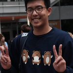
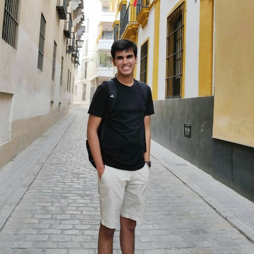
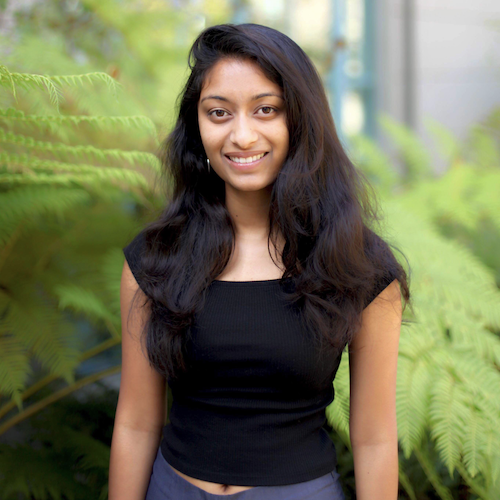
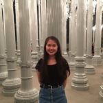
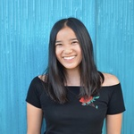
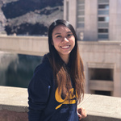
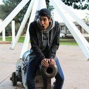

Staff
Instructors¶
 ramesh_s@berkeley.edu
OH: Tue 5pm - 6pm in 329 Soda Hall, Wed 10am-11am in 329 Soda Hall
|
Teaching Assistants (uGSIs)¶
|
Adeel Cheema (bio) I am a 4th year computer science major and this is my third semester as a uGSI for Data 8. In my spare time, I like to take pictures (acheema.com) and look at cars I can't afford on craigslist.
acheema@berkeley.edu
Lab: Wed 12pm - 2pm in Cory 105
OH: Mon 12pm - 1pm in Soda Alcoves 411
|
Adnan Hemani (bio) Hi! I’m Adnan and this is my first semester on staff as a 20-hour GSI and third semester overall. I’m a Senior majoring in Computer Science and (intended) Data Science. Outside of academics, I do research in the ACE Lab with Professor Armando Fox and have served as an ASUC Senator last year.
adnan.h@berkeley.edu
Lab: Thu 12pm - 2pm in SDH 254, Thu 6pm - 8pm in SDH 254
OH: Thu 2pm - 3pm in Soda Alcoves 611
|
Akriti Singh (bio) Hi! I'm a senior studying CS & Data Science and I'm excited to be TAing for Data 8 for a second semester. In my free time, I like trying new restaurants, going on grocery store hauls, painting kombucha bottles, and buying things with nice packaging that I don't need.
akritisingh@berkeley.edu
Lab: Wed 4pm - 6pm in Evans B6
OH: Thu 2pm - 3pm in Soda Alcoves 611
|
Alan Rosenthal (bio) I'm a third year CS and math major from the South Bay area. This is my third semester on Data 8 course staff and my second semester as a TA. Outside of class, I love cooking, playing and listening to classical music, and badminton!
amrosenthal@berkeley.edu
Lab: Thu 10am - 12pm in Cory 105
OH: Wed 12pm - 1pm in Cory 212
|
|

Andrew Linxie (bio) Hello, I am a senior majoring in CS and Statistics excited to be teaching Data 8 once again. In my free time I enjoy watching impossible youtube cooking videos, buying gummy bears by the pound and basking in awkward silence. Looking forward to meeting all of you!
alinxie@berkeley.edu
Lab: Thu 8am - 10am in Cory 105
OH: Wed 4pm - 5pm in Soda Alcoves 611
|
Anna Nguyen (bio) Hello! My name is Anna and I'm a third-year Public Health and Data Science major with a concentration in Epidemiology and Biostatistics. To avoid work, I like making poorly curated Spotify playlists, planning out vacations I can't afford, and scrolling through Dogspotting on Facebook. Data 8 has been my favorite class here at Cal, and I hope you enjoy it as much as I did!
anna-nguyen@berkeley.edu
Lab: Thu 6pm - 8pm in Evans 458
OH: Thu 12pm - 1pm in Cory 212
|
Vien-An Nguyen (bio) Hello! I'm a third year from just about 30 minutes away. GO NORCAL! I really like going to concerts (who doesn't?) and complaining about my lack of sleep but continuing to do nothing about it. I've been involved with Data 8 every semester at Berkeley, and it just keeps getting better. Stoked to have you guys part of the class!
vienannguyen@berkeley.edu
Lab: Wed 4pm - 6pm in SDH 254, Thu 2pm - 4pm in SDH 254
OH: Tue 3pm - 4pm in SDH 254
|
Austen Zhu (bio) I'm Austen, a junior CS major teaching data 8 for the fourth time. I'm interested in markets and systems. Ask me anything!
austenzhu@berkeley.edu
Lab: Thu 2pm - 4pm in Evans 458, Thu 4pm - 6pm in Evans 458
OH: Mon 10am - 11am in Soda Alcoves 411
|
|
Avery Yip (bio) Hey! I am currently a junior studying computer science & data science. I love traveling and blowing my money on tasty foods and unique dishes around the world. If you ever see me or have any questions, feel free to drop by and say hi!
averyyip@berkeley.edu
Lab: Wed 10am-12pm in Evans 458
OH: Fri 10am - 11am in Cory 367
|
Claire Zhang (bio) Hello! I'm a third year English major from Fremont, CA. I enjoy playing lots of taiko, sharing warm meals with friends, and drawing hands and dorky animals instead of doing work. This is my fourth semester on staff, and I'm really excited to get to know you all! I hope you'll enjoy the class as much as I did. :)
clairezhang@berkeley.edu
Lab: Thu 2pm - 4pm in Cory 105
OH: Wed 11am - 12pm in Cory 212
|
 Colby Lewis V (bio) Colby FIVE. Punchy biography. This semester I'm trying to convince myself that managing stress is FUN. When I'm not taking or working for class I like to cook, listen to podcasts, and have friends over for board game nights. Sometimes the podcasts spill over into class time.
colbylewis2020@berkeley.edu
Lab: Thu 10am - 12pm in SDH 254
OH: Fri 2pm - 3pm in Evans 458
|
Divyesh Chotai (bio) I enjoy playing and watching way too much basketball and laughing until my sides hurt.
dchotai@berkeley.edu
Lab: Wed 10am-12pm in Evans B6
OH: Tue 1pm - 2pm in SDH 254
|
|
Emily Chang (bio) I am a fourth year computer science major from the San Gabriel Valley. In my free time, I enjoy eating, reading and swimming. You can probably find me at coffee shops or gawking at puppies around campus!
echang7@berkeley.edu
Lab: Wed 2pm - 4pm in Evans B6
OH: Thu 1pm - 2pm in Soda Alcoves 611
|
Emma Jaeger (bio) Hi everyone! I'm Emma, a third year CS major from the Northern Virginia area. When I'm not busy studying or teaching data science, I like weightlifting, photography, and playing board games with friends (Five Crowns and One Night: Ultimate Werewolf are some recent favorites). I'm looking forward to a great semester and getting to know many of you better! :~)
emmajaeger@berkeley.edu
Lab: Wed 6pm - 8pm in Cory 105, Thu 12pm - 2pm in Cory 105
OH: Fri 11am - 12pm in Cory 367
|
Frances McQuarrie (bio) Hi I'm Francie! I am a third-year Statistics major with a minor in Computer Science. I enjoy big dogs, speed-reading 800 page Sci-Fi/Fantasy novels, speed-walking around campus, and speed-talking about all sorts of subjects. I have been involved with Data8 since first semester freshman year, and aim to help people love data science as much as I do.
fmcquarrie3@berkeley.edu
Lab: Thu 8am - 10am in Evans 458
OH: Tue 11am - 12pm in SDH 254
|
 Howard Ki (bio) Hey everyone! I am a third year CS major from South Florida. I really like listening to musicals, eating Indian food, and hugging beautiful dogs. This will be my fourth semester as a part of Data 8 course staff, and I'm really excited to meet all of you this semester!
howardki888@berkeley.edu
Lab: Wed 2pm - 4pm in Cory 105, Thu 4pm - 6pm in Cory 105
OH: Mon 12pm - 1pm in Soda Alcoves 411
|
|
Jacob Warnagieris (bio) I'm a third year Data Science major from SoCal, and this will be my third semester with Data 8 staff. When I'm not studying, I love to watch movies, travel, and rock climb. I'm looking forward to a great semester!
jwarnagieris@berkeley.edu
Lab: Thu 6pm - 8pm in Cory 105
OH: Fri 12pm - 1pm in Evans 458
|
Jamie German (bio) I am a junior studying data science, and I am especially interested in doing research. I'm from Scottsdale, Arizona, but I've loved being in NorCal for the past two years.
jamiegerman@berkeley.edu
Lab: Thu 2pm - 4pm in Evans B6
OH: TBD
|
 Jessica Hu
j.hu@berkeley.edu
Lab: Thu 8am - 10am in Evans B6
OH: Fri 3pm - 4pm in Evans 458
|
Jiayi Huang (bio) Hey everyone! My name is Jiayi and I am the lead uGSI for student experience and communication. My main responsibility is to make sure that YOU are getting the SUPPORT you need to not only succeed, but thrive in this course and beyond while having a pleasant time learning about Data Science! When I am not teaching, I enjoy singing, playing tennis, and grocery shopping at 99 Ranch :). Let's make this semester a wonderful journey for all!
huangjiayi0922@berkeley.edu
Lab: Wed 12pm - 2pm in Evans 458, Wed 2pm - 4pm in Evans 458
OH: Fri 1pm - 2pm in Evans 458
|
|
Krista Hayakawa
keh7@berkeley.edu
Lab: Thu 12pm - 2pm in Evans 458
OH: Mon 10am - 11am in Soda Alcoves 411
|
Lois Chang (bio) Hello! I'm a fourth year studying Computer Science from SoCal. I love hiking, biking, and board games. I'm also always looking for new places to eat so if you have good restaurant recs, let me know and we can go try it together :)
loischang@berkeley.edu
Lab: Thu 10am - 12pm in Evans B6
OH: Tue 2pm - 3pm in SDH 254
|
Makena Schwinn (bio) I'm a third year double majoring in Computer Science and Business Administration. I took Data 8 in my first semester at Cal, and have been involved with the course ever since. In my rare free time, I enjoy going home to hang out with my cats, or escaping Soda Hall to spend time outside. Feel free to chat with me about anything!
makenaschwinn@berkeley.edu
Lab: Thu 8am - 10am in SDH 254
OH: Mon 2pm - 3pm in Soda Alcoves 411
|
Maya Rao (bio) I'm a junior Political Economy major minoring in Russian and Data Science at UC Berkeley! On campus, I'm involved with Delta Phi Epsilon, a professional co-ed foreign service fraternity, and this past summer, I interned with the State Department in Washington, DC. I took Data 8 in Spring 2017, fell in love with the subject, and became a lab assistant and a tutor. I'm super excited to be a GSI for Data 8 this semester, and I look forward to meeting everyone!
mayarao@berkeley.edu
Lab: Thu 10am - 12pm in Evans 458
OH: Tue 10am - 11am in SDH 254
|
|
Maya Shen (bio) I am a third year applied math major with a special interest in linguistics and data visualization. I have always enjoyed interdisciplinary fields and topics and hope to combine art and science in the future. I am from Berkeley and enjoy drawing, hiking, and watching Psych in my free time.
mayashen@berkeley.edu
Lab: Wed 10am-12pm in SDH 254
OH: Mon 11am - 12pm in Soda Alcoves 411
|
Nanxi Wang (bio) I'm a senior computer science major! please send me classical art memes
nwang97@berkeley.edu
Lab: Wed 6pm - 8pm in Evans 330
OH: Mon 4pm - 5pm in Soda Alcoves 611
|
Natalia Mushegian (bio) Hey! I'm a senior Molecular Environmental Biology (woo CNR!) major and Data Science minor, and this semester is my 5th time teaching Data 8! I'm always happy to talk about being a data scientist in a different field, and extra-happy to give advice specifically about ecology/natural resource questions. Talk to me about research, plants, fermentation, sustainability, cooking, linear regressions, soil, swing dancing, folk music, your favorite books, your hobbies, your hopes and dreams...
nataliam@berkeley.edu
Lab: Wed 10am-12pm in Cory 105
OH: Wed 12pm - 1pm in Cory 212
|
Niraj Rao (bio) I'm Niraj and I've been part of Data 8 staff for 4 semesters! In my free time, I like to cry to Nights by Frank Ocean, and lose by 50 in I.M. Basketball. Ask me about how excited I am to see Childish Gambino perform live, or about how pumped I am for season 3 of Queer Eye!
niraj.a.rao@berkeley.edu
Lab: Wed 12pm - 2pm in Evans B6, Thu 4pm - 6pm in Evans B6
OH: Wed 10am - 11am in Cory 212
|
|
Nishant Kheterpal (bio) I'm a fourth-year EECS major who spends most of his time in Sutardja Dai Hall studying and doing autonomous vehicle research. Every so often, I go home to cook, bake, read books (sci-fi and fantasy, usually), and freak out over sports cars. Occasionally, I sleep.
nskh@berkeley.edu
Lab: Wed 12pm - 2pm in SDH 254, Thu 4pm - 6pm in SDH 254
OH: Thu 3pm - 4pm in Soda Alcoves 611
|
Ravi Singhal (bio) I am a junior majoring in Data Science. I love sports and am a passionate basketball fan. This is my third semester being a uGSI for Data 8 and I am super excited to be a part of this amazing class again!
ravi.singhal@berkeley.edu
Lab: Wed 6pm - 8pm in SDH 254
OH: Thu 10am - 11am in Cory 212
|
Rebecca Woolf
rwoolf@berkeley.edu
Lab: Wed 2pm - 4pm in SDH 254
OH: Thu 4pm - 5pm in Soda Alcoves 611
|

Rishab Srivastava (bio) I’m a junior from India studying Computer Science & Economics. I’m broadly interested in technology, macroeconomic policy and the financial markets. In my free time, I enjoy watching soccer, reading non-fiction, listening to indie music and creating Spotify playlists. Excited to meet all of you!
rishab.s@berkeley.edu
Lab: Thu 6pm - 8pm in Evans B6
OH: Mon 3pm - 4pm in Soda Alcoves 411
|
|
Robert Sweeney Blanco (bio) Hello, I'm a third year math major excited to be teaching the first generation of data science students here at Berkeley! Outside school, I'm interested in international relations and attend presentations by the World Affairs Council in San Francisco. Please let me know what are some good shows on Netflix, I've already finished all my favorites!
robertsweeneyblanco@berkeley.edu
Lab: Wed 6pm - 8pm in Evans B6
OH: Wed 2pm - 3pm in Soda Alcoves 611
|
Rohan Narain (bio) I'm a 3rd year studying statistics and data science. I'm interested in a variety of applications of statistics from economics to sports analytics. I'm a passionate baseball fan, and I can talk all day about the Giants (and the Warriors too)! I'm very passionate about statistics, so feel free to ask me questions about the statistics community at Cal!
narain.rohan@berkeley.edu
Lab: Thu 12pm - 2pm in Evans B6
OH: Mon 3pm - 4pm in Soda Alcoves 411
|
Ryan Roggenkemper (bio) I'm a 3rd year CogSci & CS major from Los Gatos, CA. I enjoy cooking (because it usually leads to eating things, which is pretty great), music, and playing a sport/game called jugger. I'm also a bit too good at procrastinating (please don't follow my example).
rroggenkemper@berkeley.edu
Lab: Wed 6pm - 8pm in Evans 340
OH: Thu 11am - 12pm in Cory 212
|
Sabrina Liu (bio) I'm a fourth year studying Economics, Statistics, and Music. I love everything about my hometown of Pittsburgh, especially the sports teams in it. If you have a good recipe for potatoes, please let me know; it's for 'science'
liusabrina@berkeley.edu
Lab: Wed 4pm - 6pm in Evans 458
OH: Mon 2pm - 3pm in Soda Alcoves 411
|
|
Sidney Le (bio) I'm a fourth-year statistics student devoted to inclusion and accessibility in data science. In my rare moments of free time, I enjoy enjoying art, eating fried chicken, watching movies, and hanging out with dogs. Feel free to approach me about any issues relating to: data science, statistics, sociology, looking cool.
sidney.h.le@berkeley.edu
Lab: Wed 6pm - 8pm in Evans 458
OH: Tue 2pm - 3pm in SDH 254
|
Subhiksha Mani (bio) Hi! I’m a senior studying data science and computer science. Besides teaching, I enjoy playing around with different creative outlets; my most recent endeavor is learning photography and editing to keep up with my VSCO feed. I appreciate all kinds of ice cream, Spotify’s New Music Fridays, and nice typography.
s.mani@berkeley.edu
Lab: Wed 4pm - 6pm in Cory 105
OH: Mon 1pm - 2pm in Soda Alcoves 411
|
Tutors¶
 Adele Bloch (bio) After taking Data 8 my freshman year, I fell in love with the idea of using data to make educated business decisions. Now, I am a junior at UC Berkeley double majoring in Business and Data Science, and I am entering my third year as a Data 8 tutor. In my free time I love to run long distances, find new hiking spots, and try all the food that Berkeley has to offer.
adele.bloch@berkeley.edu
|
Aidan De Angelis (bio) I am a third year from Davis, California studying Computer Science. I came to Cal to study gastroenterology and mind-gut interactions, but fell in love with CS and Data Science after taking Data8 my first semester. I love hiking, paintball, and reading science fiction. I love Data8 and hope you will too!
aidandeangelis@berkeley.edu
|
 Alan Liang (bio) Hi! I'm a 3rd year CS and Economics major sort of from Shanghai, China. Some things I enjoy include discovering good food, shibes, consumerism, and data science; guess which one is my favorite ;'). Data 8 has been one of my favorite classes at Berkeley and I'm excited of the course staff this semester. Looking forward to a great semester and meeting you all!
alanliang@berkeley.edu
|
Ananya Krishnan (bio) I am a rising sophomore studying cognitive and computer science from San Diego. I am interested in exploring cognitive processes and decision making through computational modeling. In my free time, I enjoy watching TED Talks, going on hikes, attempting to bake, and eating lots of ice-cream. I am excited to be part of the Data 8 staff this year and hope to meet you this fall!
ananya.krishnan@berkeley.edu
|
|
Angela Guan (bio) Hi everyone! My name is Angela Guan, and I am a second year student. I am on the Cal table tennis team, and I have traveled to every continent (except Antarctica) for competitions. Some hobbies are baking, hiking, trying new sports, traveling, and learning new languages. I really enjoyed Data 8, and I'm looking forward to working with you all!
guanangela@berkeley.edu
|
Anna Christeson (bio) I am a junior majoring in Data Science. I'm from Placerville, California, so Berkeley is a big city to me. I love being out in nature- camping and hiking are some of my favorite activities. I also enjoy cooking, baking, and of course Data 8.
anna.christeson@berkeley.edu
|
Ashley Quiterio (bio) Hi! I am rising sophomore interested in pursuing data science. I am excited to help people enjoy data science as much as I have come to enjoy it. In my free time, I like walking around regional parks and exploring the Bay.
ashleyquiterio@berkeley.edu
|

Avni Prasad (bio) My name is Avni, and I am a sophomore at UC Berkeley. I plan to major in Computer Science (and maybe tack on Linguistics) and minor in Journalism. As for pastime activities, I enjoy playing Bananagrams (basically Scrabble on steroids), binging TedTalks, rewatching The Office, and listening to this song (https://www.youtube.com/watch?v=I_izvAbhExY) to get me through some especially rough Mondays.
avniprasad@berkeley.com
|
 Barbara de Alfaro (bio) I'm a sophomore studying political science, and enjoy doing anything data science whenever I can. From the Bay Area, Tahoe lover, French/Italian speaker.
barbara.de .alfaro@gmail.com
|
Carlos Eduardo Ortega (bio) I am a third-year Cognitive Science major with a passion for data science. I enjoy programming, stats, binge watching sitcoms and dramas, and long walks on Sproul.
carlosortega@berkeley.edu
|
Caroline Chen (bio) I am a sophomore majoring in statistics and data science. Coffee runs through my veins, but I can still sleep through earthquakes. In my free time, I enjoy making puns and memorizing movie lines.
carolinejchen@berkeley.edu
|
Derek Tang (bio) I study computer science and stats. This is my 3rd year at Cal. Data Science is cool.
derektang@berkeley.edu
|
|
Emily Zou (bio) I am a second-year student from the DC area studying computer science. In my free time, I enjoy skating with the Cal Figure Skating Team, baking, and finding cute pictures of penguins. I was a lab assistant last semester and I'm excited to be more involved with Data 8!
emilykzou@berkeley.edu
|
George Nacouzi (bio) I am a 3rd year studying Applied Math and Data Science. I have lab assisted for Data 8, tutored math courses, and currently facilitate a DeCal. Besides teaching, I love playing ultimate frisbee!
gnacouzi@berkeley.edu
|
Gregory King (bio) Hi I’m Greg! I’m a second year from the San Gabriel Valley studying Economics. If I’m not complaining about the weather in NorCal or telling everyone how great SoCal is, you can catch me running through the Berkeley neighborhood, binge watching Netflix and HBO shows, and creating new Spotify playlists.
gregking22@berkeley.edu
|
 Gregory Du
gregoryd2017@berkeley.edu
|
|
Himaja Jangle (bio) Hi! I am a 4th year Economics major with a minor in Demography. I am originally from Fremont and I have pretty much been in the Bay my entire life. You can usually find me around Berkeley in various coffee and boba shops. This will be my first semester as a tutor for Data 8 after being a lab assistant for 3 semesters and I am super excited to get to know you all!
himaja.jangle@berkeley.edu
|
Hubert Luo (bio) I'm a third year double majoring in math and statistics from Toronto, Canada. I'm especially interested in the new perspectives data science can bring to public policy and global issues. In my free time, I enjoy swimming, watching hockey, and managing a baseball team in an online simulator.
hubertluo@berkeley.edu
|
Ian Castro (bio) I'm a second-year from the Bay Area majoring in microbial biology and media studies. My interests range all the way from computational genomics and biotechnology to film and constitutional law. Outside of Data 8, you can find me around campus working with the immigration clinic, BearWALK, and ROHP.
castro.ian@berkeley.edu
|
Iman Eslami (bio) I am a third year Economics and Data Science major from Orange County, CA. I enjoy soccer, basketball, the outdoors, politics, reading, and listening to podcasts. As a fan of both data and narrative, I am excited to tutor again for Data 8 as this course does a good job of finding the intersection of the two.
imaneslami@berkeley.edu
|
|
Jack Zhang (bio) I am a Junior majoring in Computer Science. I like basketball, snowboarding, and gaming! Feel free to reach out to me by email.
jackzhang1067@berkeley.edu
|
 Jacqueline Wood
jacquiwood1@berkeley.edu
|
 Jade Yen (bio) I am a junior studying Computer Science, Cognitive Science, and Data Science and this is my 3rd semester on staff and 5th semester with the class! Feel free to talk to me about data science, computer science, statistics or really anything else, including: behavioral economics, music recommendations, mycology, SoCal > NorCal, podcasts, fruit, casual celebrity encounters, web accessibility, and/or Nathan For You.
jadeyen@berkeley.edu
|
 Jifu Li (bio) I'm a sophomore from Jacksonville, FL majoring in MCB and planning on going to dental school. Sports take up more than 50% of my life so feel free to chat with me about fantasy football/basketball, IMs, your favorite teams, or anything at all.
jifu.li@berkeley.edu
|
|
Joohyun Kim
jh04023@berkeley.edu
|

Juliann Nguyen (bio) Hi! I'm a third year studying Statistics and Data Science. When I have some free time, I enjoy tv show binging, baking and consuming the products of those bakes, as well as dogs in real life, photos, or videos. I'm excited to be on staff and am looking forward to a great semester!
juliannnguyen@berkeley.edu
|

Katherine Tsai (bio) I am a sophomore from Palos Verdes, CA studying Data Science and Cognitive Science. In my free time I like to take naps, dance, or get gelato with friends. Data 8 has been one of my favorite classes so far, and I am to get to know everyone this semester!
katherinetsai@berkeley.edu
|
Kijung Kim (bio) Hello! I'm a senior studying EECS! Check out my personal website on the link above to find out more about me! Fun fact: you can probably find me in random places playing PoGo.
kijung@berkeley.edu
|
|

Lillian Louie (bio) Hi, I'm Lillian and I'm a third year studying data science. I'm always down for a nice cup of coffee or boba, so you can probably find me at a coffee shop watching my daily dose of dramas. I first found out about data8 one year ago, and it definitely changed my college life, so I hope it will be a wonderful experience for y'all as well.
lillianlouie@berkeley.edu
|
Olivia Lewke (bio) I am a third year studying English and Data Science. I also work in the SLC as a writing tutor, and I love learning from the people around me. My hobbies include reading, trying to find time for sleep, and of course, debugging my code.
olivialewke@berkeley.edu
|
Oscar Syu (bio) Hi! I'm a junior from Palo Alto studying data science and I'm looking forward to my 3rd semester of tutoring. When not busy, you can catch me downing enormous quantities of coffee or tea, trying out new bus routes (bless AC Transit EasyPass), arguing about basketball, running (when I feel like it), or frowning at a jupyter notebook. I'm excited to meet you all!
oscar.syu@berkeley.edu
|
Parham Rouzbahani (bio) I’m an intended Economics and Data Science major from Toronto, Canada, eh? I’m interested in data science applications within the medical field in remote communities accross North America. I’m a huge fan of dogs, board games, travelling and snow.
parouz@berkeley.edu
|
 Roshan Srikant Srinivasan (bio) I am a second year student at Cal majoring in Industrial Engineering and Operations Research (IEOR). I am originally from San Diego, CA and have pretty much lived there my entire life. Some of the my favorite things to do are sleep, catch up on my favorite Netflix show, and play Super Smash Bros. on the weekend. Some of my academic interests include teaching/tutoring and applying machine learning and blockchain technologies to healthcare, finance, and supply chain/operations.
roshansrin01@berkeley.edu
|

Sai Yandapalli (bio) Hey guys! I'm Sai. I'm a rising sophomore at UC Berkeley, majoring in Computer Science and Data Science. Outside of class, you can find me playing basketball (go Celtics), taking pictures, eating Chinese food - or teaching! I love teaching, and teach Computer Science weekly with Berkeley ANova! I'm also a huge music junkie, and collect hats. If you have any questions don't hesitate to shoot me an email!
saiyandapalli07@berkeley.edu
|
 Sam Wu (bio) Hey there! I am a sophomore studying Computer Science and Data Science, and I'm super excited to be on course staff for Data 8 this semester! I'm from Vancouver, Canada, and I love to learn about the different cultures of the world (I speak English, Mandarin, and French)! Hit me up if you like anime, food, traveling, or learning new languages!
samwu101@berkeley.edu
|
Sathvik Nair (bio) Hello there! I'm a third year studying Computer Science and Cognitive Science, and aside from data science, teaching, and teaching data science, I'm interested in natural language processing, psychology, and public policy. Outside of class, teaching, and research, I like to cook, learn about random historical facts, play music, and explore new places. Data 8 is one of my favorite classes I've taken here at Berkeley and I hope it'll be one of yours, too :)
sathviknair@berkeley.edu
|
 Saurav Mittal (bio) Hey! I'm a 2nd year EECS major from India. I'm super excited to be one of the tutors this semester. I took DATA 8 in my first semester at Cal, and I've been in love with it ever since. I hope you all enjoy the course as much as I did!
saurav@berkeley.edu
|
Shoumik Jamil (bio) I am a senior studying Data Science and Cognitive Science. I love watching sports and reading FiveThirtyEight in my spare time. Data 8 is my favorite course and I look forward to sharing my enthusiasm for Data Science with everyone!
sjamil@berkeley.edu
|
 Stephanie Djajadi
sdjajadi@berkeley.edu
|
Tamara Vilaythong (bio) I am sophomore and a Computer Science/Data Science major. I'm from San Diego so feel free to ask me about my love of tacos. I loved taking Data 8 and am excited to be a tutor this semester!
tvilayth@berkeley.edu
|
|
Umar Maniku
manikui@berkeley.edu
|
Yanay Rosen (bio) I am a second year intending to major in Computer Science. I was born in Israel but grew up in the suburbs around Boston. I took Data 8 first semester as a freshman and was a lab assistant second semester.
yanayrosen@berkeley.edu
|
Yash Swarup Agarwal (bio) I'm a sophomore majoring in Computer Science and maybe business. It's my first time on the course staff, so let's do this together! Always down to play Squash, hike or binge watch The Office!
yashswarup@berkeley.edu
|
Yash Sanghrajka
yashcal@berkeley.edu
|
|
Youmna Rabie (bio) I’m a third year double majoring in Econ and either CS or Data Science (I can’t decide!). Data8 is my favourite class at Berkeley, and I can’t wait to get started with you guys!
youmnarabie@berkeley.edu
|